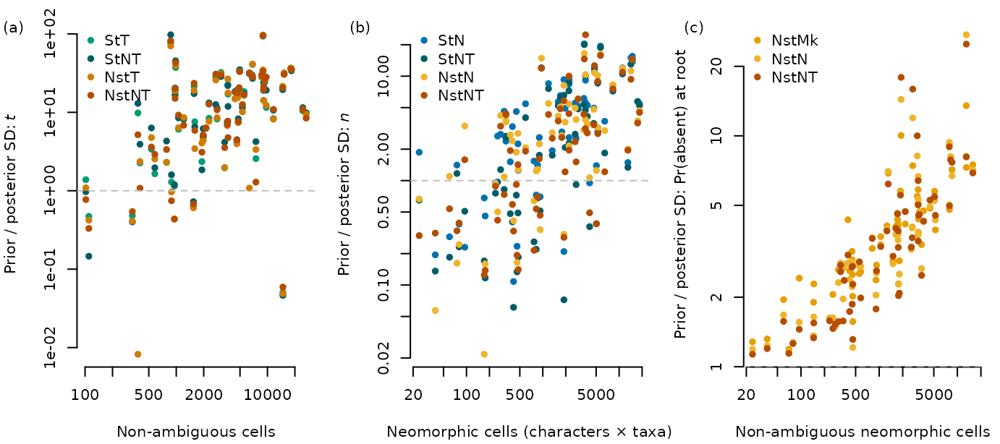

vignettes/prior-posterior.Rmd
prior-posterior.Rmd
library("neotrans")
scriptID <- "by_nt_ki"
priorMean <- 0
priorSD <- 2
nModels <- c("by_n_ki", "by_nt_ki", "ns_n_ki", "ns_nt_ki")
tModels <- c("by_t_ki", "by_nt_ki", "ns_t_ki", "ns_nt_ki")
nsModels <- c("ns_ki", "ns_n_ki", "ns_nt_ki")
hgModels <- c("hg_ki", "hg2_ki", "hg_b_ki", "hg_bm_ki")
legendModels <- union(nModels, c(tModels, nsModels))
projects <- KiProjects()
OutputPlot("priorPost", 7.2, 3.2, function() {
par(mfrow = c(1, 3), mar = c(4.2, 4.2, 0.4, 1))
# TODO restore missing datasets once results re-generated
message("rho = ", signif(
InformationGain(setdiff(projects, c(1210, 3832, 3408)),
tModels, "rate_neo", "nCoded")$estimate, 3))
Panel(1)
legend("topleft", legend = ModelLabel(tModels), bty = "n",
col = ModelCol(tModels), pch = 16)
legend("bottom", legend = ModelLabel(tModels), bty = "n",
col = ModelCol(tModels), pch = 16)
message("rho = ", signif(
InformationGain(projects, nModels, "rate_loss", "neoCells")$estimate, 3))
Panel(2)
legend("topleft", legend = ModelLabel(nModels), bty = "n",
col = ModelCol(nModels), pch = 16)
message("rho = ", signif(
InformationGain(projects, nsModels,
"root_freqs.1.", "nNeoCoded",
priorSD = sqrt(1 / 12) #for dnDirichlet(1, 1)
)$estimate, 3))
Panel(3)
legend("topleft", legend = ModelLabel(nsModels), bty = "n",
col = ModelCol(nsModels), pch = 16)
})